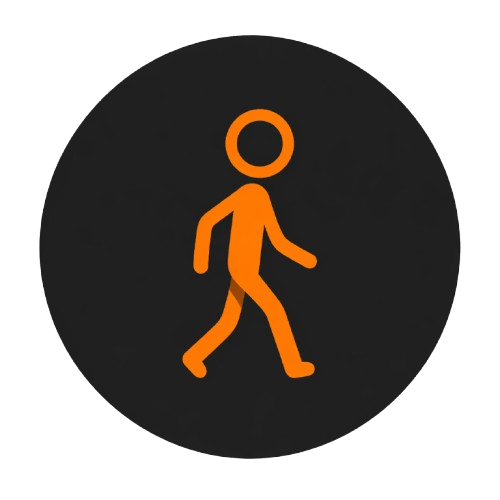
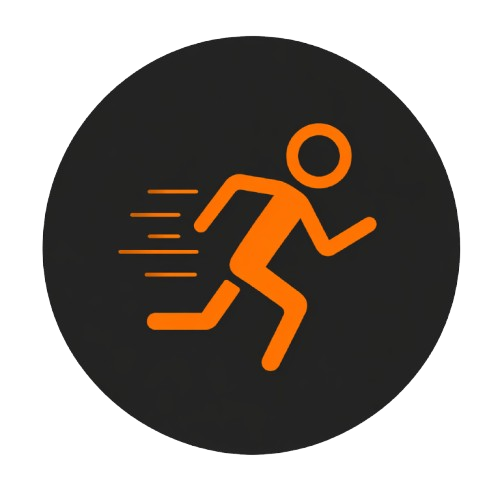
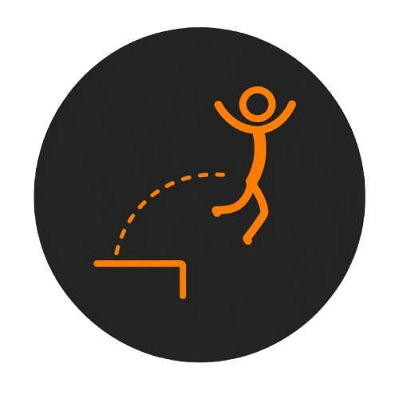

Fonctionnalités
-

Marche fluide et arrêt progressif -

Transition naturelle de la marche vers la course -

Saut avec réception stabilisée -
Adaptation dynamique au terrain
-
Rendu spline avec effets visuels et debug overlay